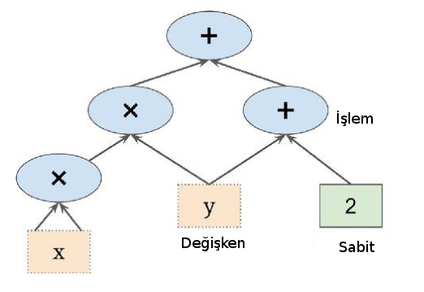
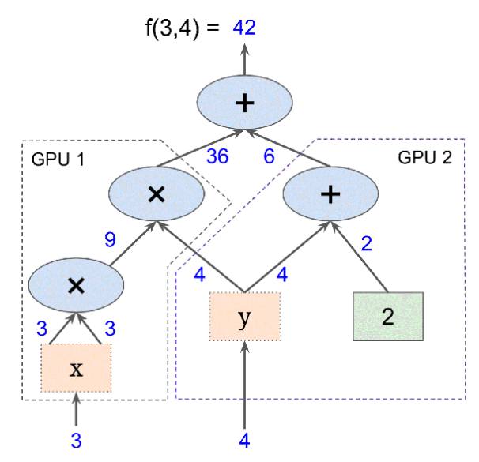

Tensorflow
Google'ın yazdığı ve açık yazılım haline getirdiği paket TF çoğunlukla yapay öğrenim bağlamında gündeme geliyor, fakat TF aslında genel kullanımı olan bir yazılım. TF bir sayısal hesap kütüphanesi, daha spesifik olarak, ona çizit olarak verilen hesapları yapabilen bir sayısal hesap paketi.
TF ile hesap yapmak için hesabı temsil eden bir çizit kurulur, mesela f(x,y) = x^2 y + y + 2 için

Bu hesap ağacında görülen sayılar tek sayı olabilir, çok boyutlu vektör, matris, ya da çok boyutlu matris olabilir. Matematikte bu objelere genel olarak "tensor" ismi veriliyor, paketin ismi de buradan geliyor, tensorlar hesap çiziti içinde bir hesaptan diğerine "akıyorlar" (flow). Hesabı çizit olarak belirtmenin bazı avantajları var, en önemlisi çizit üzerinde direk otomatik türev alınabilir, bkz [4] yazısı, ve bu şekilde gradyan hesapları kolay bir şekilde yapılabiliyor. Bir diğeri çizitin paralelleştirme için doğal bir yapı olması; çiziti istediğimiz şekilde bölerek parçaları farklı mikroişlemci (CPU), ya da grafik işlemci (GPU) üzerinde paralel bir şekilde işletebiliriz, mesela üstteki f için f(3,4) hesabı,

şeklinde iki parçaya bölünebilir. 3 girilen soldaki parça kendi başına hesabını yaparken aynı anda 4 girilen diğer parça işlemine devam edebilir. Ayrıca Google TPU adı verilen tensor işlemci üniteleri üzerinden artık CPU, GPU yerine direk TF için optimize edilmiş yeni işlemciler üzerinden paralelizasyon yapılabiliyor.
Tensorflow 1
TF kodlaması nasıl olur? Üstteki örnek için
import tensorflow as tf
x = tf.Variable(3, name="x")
y = tf.Variable(4, name="y")
f = x*x*y + y + 2
İçinde x,y,f düğümleri (node) olan bir çizit yaratıldı. Bu kadar! Fakat anlamamız gereken önemli bir nokta var, üstteki kodu işletince halen bir hesap yapmış olmuyoruz, sadece üzerinden hesabın yapılabileceği çizit yapısını yaratmış oluyoruz. Hesabın kendisi için bir TF oturumu (session) açmak lazım, bu oturum üzerinden değişkenler başlangıç değerlerlerine eşitlenir, ve sonra f hesabı tetiklenir. Esas hesap bu şekilde ortaya çıkar.
sess = tf.Session()
sess.run(x.initializer)
sess.run(y.initializer)
result = sess.run(f)
print(result)
42
Eğer işimiz bitti ise ve kaynakların (bellek, işlemci gibi) geri dönüşümünü, serbest bırakılmasını istiyorsak oturumu kapatırız,
sess.close()
Kodlama açısından biraz daha temiz bir yol,
with tf.Session() as sess:
x.initializer.run()
y.initializer.run()
result = f.eval()
print result
42
\verb!with! kullanımı ile blok dışına çıkılınca kapatma işlemi otomatik olarak yapılıyor. Nihai hesap için \verb!eval! çağrısı yapıldığını gördük, bu çağrı aslında herhangi bir düğümün hesaplanmasını tetikleyebilir. Bu tetikleme sonrasında TF bir düğümün hangi diğer düğümlere bağlı olduğuna bakarak çizitte önce o düğümlerin hesabını yapacaktır, ve o çıktıları çizite göre birleştirerek nihai sonucu bulacaktır. Mesela
w = tf.constant(3)
x = w + 2
y = x + 5
z = x * 3
with tf.Session() as sess:
print 'y =', y.eval()
print 'z =', z.eval()
y = 10
z = 15
TF otomatik olarak y'nin w'ye, onun da x'e bağlı olduğunu gördü, önce w'yi işletti, sonra y'yi, ve onu da z hesabı için kullandı. Dikkat, TF önbellekleme yapmaz, yani üstteki kod w,x hesabını iki kere yapar. Hesap çağrısı sonrası değişken değerleri muhafaza edilir (çünkü onlar çizitin parçası) fakat düğüm değerleri yokolur.
TF bir anlamda numpy kütüphanesinin çizitli, çok işlemcili versiyonu olarak görülebilir. Bir numpy matrisi üzerinde yapılan pek çok işlem TF ile de yapılabilir. Mesela bir matrisin tümü, herhangi bir ekseni bazındaki toplam alttaki gibi alınabiliyor,
x = tf.constant([[1., 1., 1.], [1., 1.,1.]])
c1 = tf.reduce_sum(x)
print tf.Session().run(c1)
c1 = tf.reduce_sum(x, 0) # y ekseni uzerinden toplam
print tf.Session().run(c1)
c2 = tf.reduce_sum(x, 1) # x ekseni uzerinden toplam
print tf.Session().run(c2)
6.0
[ 2. 2. 2.]
[ 3. 3.]
Boyutları tekrar düzenlemek için reshape var, alışık olunan numpy
versiyonu gibi işliyor. -1 değerinin özel bir önemi var, sadece bir
tane -1 kullanılabilir, ve bu durumda o boyutta "ne olduğu önemli
değil" mesajı verilmiş olur.
x1 = tf.constant([1, 2, 3, 4, 5, 6, 7, 8, 9])
x2 = tf.constant([[[1, 1, 1],[2, 2, 2]],
[[3, 3, 3],[4, 4, 4]],
[[5, 5, 5],[6, 6, 6]]])
with tf.Session() as sess:
res1 = tf.reshape(x1, [3, 3])
print tf.Session().run(res1)
res2 = tf.reshape(x2, [2, -1])
print tf.Session().run(res2)
[[1 2 3]
[4 5 6]
[7 8 9]]
[[1 1 1 2 2 2 3 3 3]
[4 4 4 5 5 5 6 6 6]]
Dışarıdan Okunan Veriyi Çizite Vermek
Bunu yapmanın en basit yolu yer tutucu düğüm (placeholder node) kullanmak. Bu düğümler özel düğümler, hiç bir iş yapmıyorlar, içlerinde veri yok, sadece onlara dışarıdan verdiğimiz veriyi çizit içine taşıyorlar, yani çizitin akışına dahil ediyorlar. Eğer işleyiş anında onlara dışarıdan veri verilmezse TF bir hata mesajı verecektir.
Yer tutucuları tanımlarken onların önceden tipini tanımlayabiliriz,
şart degil ama bir büyüklük te tanımlanabilir, None ile burayı boş
bırakmak ta mümkün. Şimdi yer tutucu A tanımlayalım, B ona bağlı
olsun, sonra B değerini hesaplamak için eval çağrırken yer
tutucunun içini o anda dolduralım, ve sonuca bakalım,
A = tf.placeholder(tf.float32, shape=(None, 3))
B = A + 5
with tf.Session() as sess:
print B.eval(feed_dict={A: [[1, 2, 3]]})
[[ 6. 7. 8.]]
Yer tutucular tipik olarak gradyan inişi ile optimizasyon sırasında eğitim verisini ufak toptan parçalar olarak mesela X,y uzerinden çizite vermek için kullanılır.
Tensorflow 2
Yeni versiyonda bazı değişiklikler var, mesela sürekli Session
kullanımı gerekli değil,
import tensorflow as tf
print("TensorFlow version:", tf.__version__)
TensorFlow version: 2.9.2
Basit bir çarpma örneği,
a = tf.constant([1, 2, 3, 4, 5, 6], shape=[2, 3])
b = tf.constant([7, 8, 9, 10, 11, 12], shape=[3, 2])
c = tf.matmul(a, b)
print (c)
<tf.Tensor: shape=(2, 2), dtype=int32, numpy=
array([[ 58, 64],
[139, 154]], dtype=int32)>
Hız Kontrolü
Tensorflow basit matris çarpımlarını ne kadar hızlandırıyor? Kontrol edelim,
import numpy as np
N = 3000
A = np.random.randn(N,N)
B = np.random.randn(N,N)
from timeit import default_timer as timer
from datetime import timedelta
start = timer()
C = np.dot(A,B)
end = timer()
print('elapsed time', timedelta(seconds=end-start))
elapsed time 0:00:01.292723
Şimdi TF ile çarpım,
TA = tf.random.normal([N,N], 0, 1, tf.float32)
TB = tf.random.normal([N,N], 0, 1, tf.float32)
start = timer()
TC = tf.matmul(TA, TB)
end = timer()
print('elapsed time', timedelta(seconds=end-start))
elapsed time 0:00:00.043483
Kod Google Collab üzerinde işletildi, ve bu örnek için çarpım 30 kat
daha hızlı yapıldı. Yanlız GPU'ya veri kopyalama durumuna dikkat, eğer
Numpy matrisleri A, B'yi alıp Tensorflow'a constant ile verseydim,
TF çarpmımı ilk seferinde daha hızlı olmazdı (2'inci, 3'üncü hızlı,
herhalde önbellekleme var) çünkü kopyalarken zaman kaybetmiş
olurdum. Fonksiyon tf.random.normal ile matrisi GPU üzerinde
yaratılmasını zorlamış olduğumuz için, GPU çarpım işlem farkı hemen
gözüküyor.
Kurulum
Tensorflow kullanımı ve gelişimi GPU [1] gelişimi ile kol kola gitmiştir, zannederim bu sebeple CPU üzerinde kurulum gözardı edilmeye başlandı. Bazı versiyonlar ve işletim sistemlerinde CPU kullanımı yapılamıyor. Bu sebeple Google Collab [2] denenebilir, İnternet sayfası üzerinden kodlama yani, ya da spesifik bir GPU donanımı alınabilir, mesela NVidia Jetson [3]. Jetson üzerinde kurulum o yazıda var.
Kaynaklar
[1] [GPU](../../2020/12/gpu-cuda-pycuda.html)
[2] [Google Collab](../../2018/11/gpu-tpu-saglayan-not-defter-ortami.html).
[3] [Jetson Nano](../../2020/12/nvidia-jetson-nano-2GB-wifi.html)
Yukarı